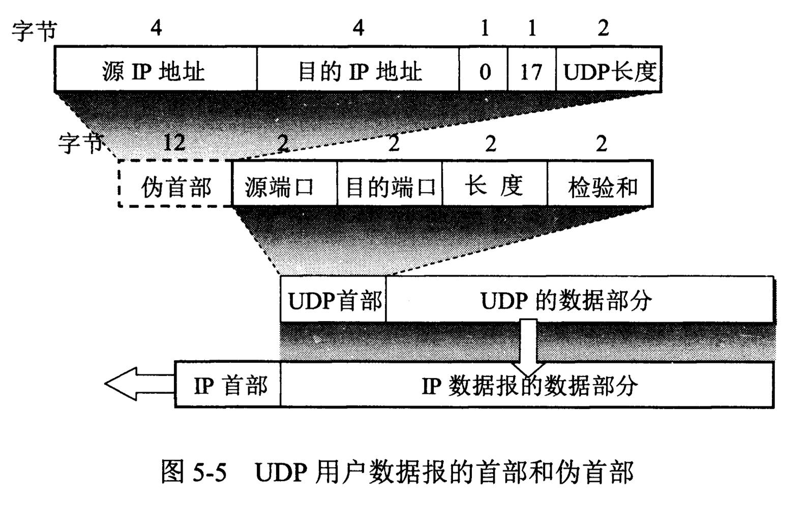
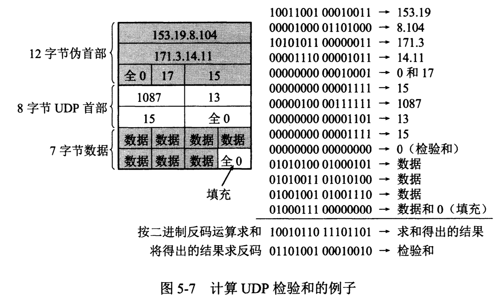

概述
UDP只在IP数据报服务之上增加了复用和分用功能和差错检测功能。 UDP的主要特点： 1. UDP是无连接的，即发送数据之前不需要建立连接，发送数据结束后不需要释放连接，这样可以减少开销和时延。 2. UDP使用尽最大努力交付，即不保证可靠交付，因此主机不需要维持复杂的连接状态表。 3. UDP是面向报文的。UDP在应用程序交下来的报文之前添加首部后就向IP层交付。 4. UDP没有拥塞控制。允许主机以恒定速率发送数据，允许在网络发生拥塞时丢失一些数据，但不允许数据有太大的时延，这对实时应用很重要。 5. UDP支持一对一、一对多、多对一、多对多的交互通信。 6. UDP的首部开销小，只有8个字节，比TCP首部的20个字节要短。
针对UDP可以引起拥塞和数据丢失，一些实时应用会对UDP增加一些提高可靠性的措施，比如采用前向纠错或重传已丢失的报文。 # UDP的首部格式 UDP的首部字段很简单，只有8个字节，由4个字段组成，每个字段都是2字节。各字段的意义如下： 1. 源端口 源端口号。在需要对方回信时选用，不需要时可用全0； 2. 目的端口 目的端口号。必须有。 3. 长度 UDP用户数据报的长度，最小值是8（仅有首部）。 4. 检验和 检测UDP用户数据报在传输中是否有错。有错就丢弃。

UDP的功能实现
分用和复用功能：
基于端口可以实现。当运输层从IP层收到UDP数据报时，根据首部中的目的端口把UDP数据报通过相应的端口，上交给应用程序。 如果接收方UDP发现收到的报文中目的端口号不正确，就丢弃报文。并由ICMP发送“端口不可达”差错报文给发送方。traceroute中就是利用含有非法端口的UDP数据报来达到测试目的。
差错检测功能：
计算检测和时，会在UDP数据报前临时增加12个字节的伪首部。伪首部既不向下传送也不向上递送，而仅仅是为了计算检验和。伪首部的内容如上图。 UDP计算检验和的方法和IP数据报的方法相似，但UDP的检验和是把首部和数据部分一起都检验。发送段检验和计算方法如下： 1. 将全0放入检验和字段； 2. 将伪首部以及数据报看成是由许多16位的字串接起来； 3. 若UDP数据报的数据部分不是偶数个字节，则填入一个全0的字节（此字节不发送）； 4. 按二进制反码求这些16位字的和。 5. 设置检验和字段，使无差错时求和结果为全1。
接收端检测方法类似。

参考文献：《计算机网络（第7版）》谢希仁著。